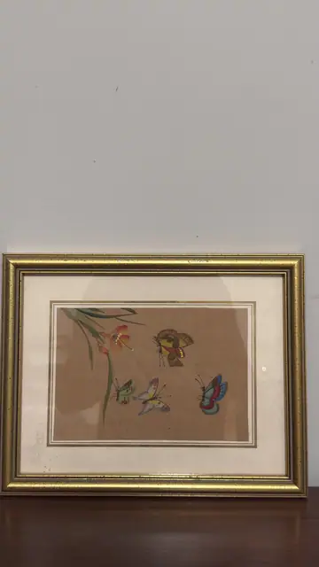

Paintings & Prints
Chinese Butterflies with Orange Lily on Silk, Framed
Unknown · 20th century
Price Upon Request

About the Item
Companion piece in the same manner as A096: on a warm tan silk ground, a stem of long green blade-like leaves rises at the left carrying two orange-red lily flowers with yellow throats, and four butterflies and moths are scattered across the open ground to the right. Their wings are painted in russet, gold, turquoise, cobalt and scarlet with fine dark veining and threadlike antennae. The composition is spare and asymmetric, with most of the silk left empty. Presented in the same cream mat with fine ruled line and narrow speckled gilt frame under glass. Medium: gouache and ink on silk. Condition: Silk evenly toned; a small light spot on the mat at the right and general glare on the glass. No tears or losses visible.
Details
- Creator:
- Unknown
- Creation Year:
- 20th century
- Dimensions:
- Height: 8.75 in (22.23 cm)
Width: 11.0 in (27.94 cm)
outside of frame - Medium:
- gouache and ink on silk
- Period:
- 20Th
- Condition:
- Offered in the condition shown in the photographs.
- Reference Number:
- VO-145
- Documentation:
- no certificate photographed